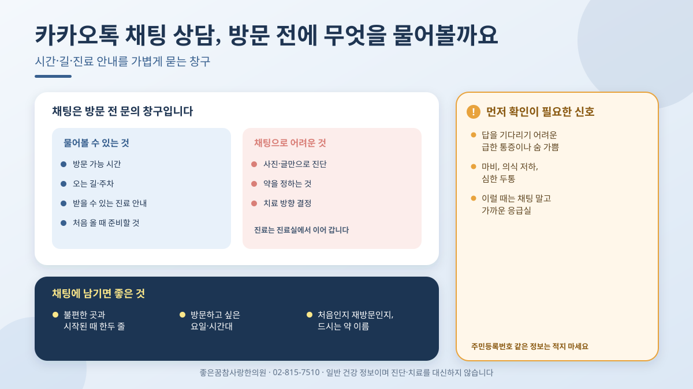

이종호 한의사 감수좋은꿈참사랑한의원 대표원장 (한의사 면허번호 19769)발행 2026-11-23 · 수정 2026-11-26
이 글의 차례
- 왜 첫 연락을 채팅으로 하는 분이 많을까요
- 왜 채팅으로는 진단을 하지 않을까요
- 물어볼 수 있는 것
- 채팅 상담으로 하기 어려운 것
- 왜 사진과 글만으로는 판단하기 어려울까요
- 채팅은 어떻게 쓰면 답을 받기 쉬울까요?
- 개인 정보는 어디까지 적으면 될까요?
- 채팅으로 자주 물으시는 것들
- 부모님 대신 자녀가 문의할 때
- 채팅 답을 기다리는 동안 해 볼 수 있는 것
- 먼 곳에서 오신다면 채팅으로 무엇을 확인할까요?
- 아이 진료를 문의할 때는
- 채팅에 쓰기 망설여지는 이야기는 어떻게 할까요?
- 이런 문의는 채팅보다 전화가 편합니다
- 먼저 이렇게 여쭙니다
- 한의원에서 함께 살필 수 있는 경우
- 채팅을 보내기 전에 점검해 보세요
- 채팅 뒤 방문까지 집에서 해 둘 것
- 다시 오시는 분은 채팅을 어떻게 쓰면 좋을까요?
- 예약을 바꾸거나 취소할 때도 채팅을 써도 되나요?
- 채팅에 쓴 내용은 진료실에서 어떻게 이어지나요?
- 채팅으로 남기면 좋은 내용
- 이런 증상은 먼저 확인이 필요합니다
카카오톡 채팅 상담은 방문 전에 시간, 길, 받을 수 있는 진료를 가볍게 물어보는 창구입니다. 몸이 불편해 전화하기 어렵거나, 방문 전에 가볍게 물어보고 싶을 때 카카오톡 채팅 상담을 쓸 수 있습니다.
밤 11시, 잠자리에 누웠는데 어깨가 욱신거립니다. 내일은 꼭 한의원에 가 봐야지 싶다가도, 이 시간에 전화할 수는 없고 아침이 되면 또 바빠서 잊어버릴 것 같지요. 그럴 때 휴대폰을 들고 몇 줄 남겨 두면, 마음속 숙제를 하나 덜어 낸 기분이 듭니다.
채팅은 그런 마음을 위해 열어 둔 창구입니다. 다만 채팅으로 할 수 있는 일과 진료실에서 해야 하는 일은 다릅니다. 이 글에는 채팅으로 무엇을 물으면 좋은지, 어떻게 쓰면 답을 받기 쉬운지, 그리고 왜 진단은 방문해서 정하는지를 정리했습니다.
왜 첫 연락을 채팅으로 하는 분이 많을까요
전화는 생각보다 용기가 필요합니다. 근무 중이라 자리를 비우기 어렵거나, 주변에 사람이 많아 아픈 이야기를 소리 내어 하기 망설여지기도 하지요. 말을 정리하기 전에 상대가 받으면 무엇부터 말해야 할지 막막하다는 분도 있습니다.
채팅은 내가 편한 때에, 생각을 정리해 가며 쓸 수 있습니다. 출퇴근 지하철 안에서도, 아이를 재운 뒤 밤에도 남길 수 있지요. 이렇게 시작이라도 해 두면 불편을 미루는 날이 줄어듭니다. 저는 그 작은 시작을 소중하게 생각합니다.
왜 채팅으로는 진단을 하지 않을까요
- 같은 증상도 사람마다 원인과 상태가 달라, 직접 이야기를 듣고 필요하면 진찰해야 제대로 살필 수 있습니다.
- 통증의 정도와 움직임, 맥과 혀의 상태는 직접 보고 만져 봐야 알 수 있는 부분이 많습니다.
- 채팅은 방문 전 궁금한 점을 덜어 드리는 창구로 쓰고, 진료는 진료실에서 이어 갑니다.
- 채팅에 남기신 내용도 방문 때 다시 말씀해 주시면 이어서 여쭙습니다.
물어볼 수 있는 것
- 평일과 주말의 방문 가능 시간
- 노량진역이나 상도역에서 오는 길, 주차
- 교정추나, 침, 한약, 초음파 진단 같은 진료 안내
- 처음 방문 때 준비할 것(복용 약 목록, 검사 결과)
- 네이버 예약이 어려울 때의 방문 방법
채팅 상담으로 하기 어려운 것
- 사진이나 글만으로 진단을 받거나 약을 정하는 것은 어렵습니다.
- 증상의 정도나 치료 방향은 진료실에서 직접 이야기를 듣고 정합니다.
왜 사진과 글만으로는 판단하기 어려울까요
예를 들어 무릎이 부었다며 사진을 보내 주시는 경우가 있습니다. 그런데 사진은 빛과 각도에 따라 붓기가 커 보이기도, 작아 보이기도 합니다. 만졌을 때 따뜻한지, 어디를 누르면 아픈지, 무릎을 굽히고 펼 때 어디서 걸리는지는 사진에 담기지 않습니다.
글도 마찬가지입니다. "허리가 아파요"라는 같은 문장 뒤에는 아침에만 뻣뻣한 분, 앉아 있으면 심해지는 분, 다리까지 저린 분이 모두 숨어 있습니다. 진료실에서는 이 차이를 하나씩 여쭙고, 서고 걷고 앉는 동작을 직접 보며 가려냅니다.
그리고 진맥은 모든 분께 합니다. 손목에서 느껴지는 맥은 화면 너머로 전할 수 없습니다. 잠과 소화, 몸의 온기, 대소변까지 함께 들어야 그분의 몸 전체가 그려집니다. 그래서 채팅은 방문을 돕는 길잡이로만 쓰고, 판단은 직접 뵙고 정합니다.
이것은 채팅에 쓴 이야기를 가볍게 여겨서가 아닙니다. 오히려 한 분 한 분의 몸을 제대로 살피고 싶어서입니다. 화면 너머로 짐작해 말씀드렸다가 잘못 이끄는 일이 없도록, 진료실에서 직접 뵙고 이야기 나누는 길을 택하는 것입니다.
채팅은 어떻게 쓰면 답을 받기 쉬울까요?
한 번에 하나씩, 짧게 묻는 것이 좋습니다. 여러 질문이 길게 섞여 있으면 답을 드릴 때 빠뜨리는 것이 생길 수 있습니다. 궁금한 것이 여럿이라면 번호를 붙여 나눠 적어 주세요.
예를 들어 이렇게 적어 보세요. "처음 방문 예정입니다. 1) 이번 주 토요일 오전에 가능한가요? 2) 2주째 오른쪽 어깨가 아파 팔을 올리기 힘든데 상담 가능한가요? 3) 상도역에서 걸어가도 되나요?" 이 정도면 답을 드리기도, 방문 준비를 안내해 드리기도 쉽습니다.
증상을 적을 때는 부위, 시작된 때, 가장 불편한 동작 세 가지만 담으면 충분합니다. 자세한 이야기는 진료실에서 충분히 듣겠습니다.
맞춤법이나 말투는 신경 쓰지 않으셔도 됩니다. 아픈 몸으로 휴대폰 화면을 보며 글을 쓰는 것 자체가 쉽지 않은 일이니까요. 짧은 단어로 적어 주셔도 뜻은 충분히 전해집니다.
개인 정보는 어디까지 적으면 될까요?
채팅에는 이름 정도와 불편한 곳, 방문하고 싶은 시간이면 충분합니다. 주민등록번호, 카드 번호, 자세한 집 주소 같은 정보는 적지 않으셔도 됩니다. 진료에 필요한 정보는 방문하셔서 접수할 때 확인합니다.
가족 대신 문의하실 때도 마찬가지입니다. 진료받을 분과의 관계, 불편한 곳, 오실 수 있는 시간 정도만 남겨 주세요. 다른 병원의 진단서나 검사지는 사진으로 보내기보다 방문하실 때 직접 가져오시면 함께 보며 이야기할 수 있습니다.
채팅으로 자주 물으시는 것들
진료 안내에 관한 질문이 가장 많습니다. 예를 들어 초음파 진단을 받을 수 있는지 물으시면, 초음파는 진찰 뒤 통증 부위를 눈으로 확인할 필요가 있다고 판단될 때 쓴다고 안내해 드립니다. 모든 분께 하는 검사는 아니라는 뜻입니다.
보험에 관한 질문도 자주 받습니다. 건강보험(또는 자동차보험) 적용 여부는 방문 전 전화로 확인해 주세요. 받으실 진료에 따라 달라질 수 있어, 통화로 여쭤 보시는 것이 정확합니다.
한약을 얼마나 먹어야 하는지도 많이 물으십니다. 이는 진단과 상담을 거친 뒤에 정하는 것이라 채팅으로 미리 말씀드리기 어렵습니다. 대신 상담 날 무엇을 챙겨 오시면 좋은지는 채팅으로도 충분히 안내해 드릴 수 있습니다.
부모님 대신 자녀가 문의할 때
멀리 사는 자녀가 부모님 대신 채팅으로 문의하시는 경우도 있습니다. 이럴 때는 부모님이 불편해하시는 곳, 오실 수 있는 요일, 누가 모시고 오는지를 적어 주세요. 부모님이 걷기 불편하시다면 그 점도 알려 주시면 오시는 길과 시간을 정하는 데 도움이 됩니다.
부모님이 드시는 약이 많다면 약 봉투를 모두 챙겨 오시도록 미리 말씀드려 주세요. 어르신은 진료실에서 긴장하셔서 하고 싶은 말을 잊으시기도 하니, 자녀분이 불편한 점을 메모해 부모님 손에 들려 보내 드리면 좋습니다.
채팅 답을 기다리는 동안 해 볼 수 있는 것
답을 기다리는 사이에도 불편은 이어지지요. 그동안은 불편한 부위를 무리하게 쓰지 말고, 몸을 따뜻하게 해 주세요. 아픈 동작을 억지로 확인하려고 반복해서 움직여 보는 것은 피하시는 것이 좋습니다.
잠은 평소 시각에 맞춰 주무시고, 끼니도 거르지 마세요. 잘 먹고, 잘 자고, 잘 싸고, 마음 편하고, 몸 따뜻하게. 이 다섯 가지는 제가 몸이 회복하는 바탕으로 늘 강조하는 것입니다. 그리고 그날의 불편을 한 줄씩 적어 두시면 방문했을 때 이야기가 훨씬 구체적이 됩니다.
먼 곳에서 오신다면 채팅으로 무엇을 확인할까요?
다른 동네에서 일부러 시간을 내 오신다면, 헛걸음하지 않도록 미리 확인해 두면 좋습니다. 방문하려는 날의 진료 시간, 타고 오실 노선에 맞는 길, 차로 오신다면 주차 가능 여부를 물어보세요. 평일은 저녁 8시, 토·일·공휴일은 오후 3시에 진료가 끝납니다.
지하철로 오신다면 7호선 상도역 3번 출구에서 걸어오시거나, 1·9호선 노량진역 3번 출구 근처에서 동작01 마을버스를 타시는 길이 있습니다. 어느 길이 편할지는 그날 몸 상태와 타고 오시는 노선에 따라 고르시면 됩니다. 주차는 그날 사정에 따라 달라 방문 전 전화로 확인해 주세요.
아이 진료를 문의할 때는
아이 일로 문의하실 때는 아이가 무엇을 불편해하는지, 언제부터 그랬는지, 학교나 어린이집 일정상 오실 수 있는 시간을 적어 주세요. 잠을 자주 깬다, 밥을 잘 안 먹는다, 감기를 자주 앓는다처럼 짧게 적어 주셔도 충분합니다.
방문하는 날에는 아이의 잠과 식사, 배변을 며칠 적어 오시면 살피는 데 큰 도움이 됩니다. 아이가 낯선 곳을 무서워한다면 그 점도 미리 알려 주세요. 진료실에서 아이가 편해질 때까지 천천히 이야기를 나누겠습니다.
채팅에 쓰기 망설여지는 이야기는 어떻게 할까요?
마음이 힘든 이야기, 여성 건강에 관한 이야기처럼 글로 남기기 망설여지는 내용도 있습니다. 그럴 때는 채팅에 자세히 쓰지 않으셔도 됩니다. "상담받고 싶은 일이 있다"는 정도와 방문 가능한 시간만 남겨 주셔도 괜찮습니다.
나머지 이야기는 진료실에서 편하게 꺼내 주세요. 진료실에서 나눈 이야기는 진료를 위해서만 씁니다. 말씀하시기 어려운 부분은 천천히, 하실 수 있는 만큼만 말씀하셔도 됩니다.
이런 문의는 채팅보다 전화가 편합니다
채팅은 바로 답을 드리기 어려울 때가 있습니다. 그래서 시간이 급한 일은 전화(02-815-7510)가 빠릅니다.
- 오늘 바로 접수할 수 있는지 확인하고 싶을 때
- 예약 시간에 늦을 것 같을 때
- 마감 가까이 도착할 것 같아 접수 가능 여부를 알고 싶을 때
- 오는 길을 잃어 지금 위치를 설명해야 할 때
반대로 시간이 넉넉한 질문, 예를 들어 다음 주 방문 시간이나 처음 올 때 준비물 같은 것은 채팅으로 편하게 남기셔도 됩니다.
먼저 이렇게 여쭙니다
방문하시면 진료실에서 이런 것부터 여쭙습니다.
- 지금 가장 불편한 곳과 언제부터 그랬는지
- 잠·소화·대소변은 어떤지
- 서고 걷고 앉을 때 불편한 동작이 있는지
한의원에서 함께 살필 수 있는 경우
- 증상이 있는데 한의원에서 어떤 진료를 받아야 할지 모르는 경우 간단히 적어 주시면 방문 상담이 맞는지 안내합니다.
- 먼 곳에서 오셔서 방문 전에 확인하고 싶은 경우 시간과 길을 미리 물어볼 수 있습니다.
처음 오시면 접수한 뒤 원장이 모든 분께 맥부터 짚으며 불편한 곳과 생활을 여쭙습니다. 필요하면 혀와 배를 살피거나 초음파로 확인하고, 상태에 맞는 치료와 다음 방문 안내로 이어집니다. 다시 오시면 지난번 이야기부터 이어서 여쭙습니다.
채팅을 보내기 전에 점검해 보세요
아래 항목을 확인하고 보내시면 답을 주고받는 횟수가 줄어듭니다.
- 처음 방문인지, 다시 방문인지 적었나요?
- 오고 싶은 요일과 시간대를 적었나요?
- 불편한 부위와 시작된 때를 한두 줄로 적었나요?
- 질문이 여럿이라면 번호를 붙여 나눴나요?
- 민감한 개인 정보를 적지는 않았나요?
다섯 가지를 다 채우지 못해도 괜찮습니다. 방문하고 싶은 시간과 불편한 곳, 이 두 가지만 있어도 안내를 시작할 수 있습니다. 완벽하게 쓰려다 보내지 못하는 것보다, 짧게라도 보내 두시는 편이 좋습니다.
채팅 뒤 방문까지 집에서 해 둘 것
채팅으로 방문 날짜를 정하셨다면, 그날까지 불편이 어떻게 달라지는지 하루 한 줄씩 적어 보세요. 아침과 저녁 중 언제 더 불편한지, 무엇을 한 뒤 심해졌는지, 잠은 어땠는지 정도면 충분합니다.
드시는 약은 약 봉투나 처방전을 사진으로 찍어 두시면 편합니다. 영양제나 건강식품도 함께 챙겨 주시고, 병원에서 받은 검사 결과가 있다면 같이 가져와 주세요. 한약을 생각하고 계신다면 드시는 약을 확인한 뒤에 처방을 정하니, 이 준비가 특히 도움이 됩니다. 지금 드시는 약은 임의로 끊지 마시고 그대로 알려 주세요.
다시 오시는 분은 채팅을 어떻게 쓰면 좋을까요?
이미 진료를 받고 계신 분도 다음 방문 시간을 묻거나, 다음 진료 때 가져올 것을 확인할 때 채팅을 쓰실 수 있습니다. 지난번 진료 뒤 달라진 점이 있다면 메모해 두셨다가 진료실에서 말씀해 주세요. 그 변화를 보며 다음 치료를 정합니다.
한약을 드시는 중에 불편한 반응이 느껴진다면 채팅 답을 기다리지 마시고 복용을 멈춘 뒤 전화로 연락해 주세요. 치료 뒤 통증이 오히려 심해진 것 같을 때도 전화로 상태를 알려 주시면 다음 방문 시간을 앞당길지 함께 정합니다.
예약을 바꾸거나 취소할 때도 채팅을 써도 되나요?
예약을 바꾸거나 취소하실 때는 네이버 예약 화면이나 전화가 정확합니다. 특히 당일 변경이나 늦어질 것 같은 경우에는 채팅 답이 늦을 수 있으니 전화로 알려 주세요. 미리 알려 주실수록 다른 시간으로 맞추기 쉽습니다.
채팅에 쓴 내용은 진료실에서 어떻게 이어지나요?
채팅에 남기신 내용이 있더라도, 진료실에서는 처음부터 다시 여쭙니다. 같은 이야기를 두 번 하시는 것 같아 번거로우실 수 있지만, 직접 말씀하시는 동안 채팅에는 적지 못했던 이야기가 함께 나오는 경우가 많습니다.
예를 들어 채팅에는 "목이 아프다"고만 적으셨다가, 진료실에서 이야기를 나누다 보니 잠을 설친 지 꽤 되었고 식사도 불규칙했다는 것이 드러나기도 합니다. 그래서 채팅에 썼던 메모를 그대로 가져오셔서, 거기에 덧붙이며 말씀해 주시면 좋습니다.
채팅으로 남기면 좋은 내용
- 불편한 곳과 시작된 때를 한두 줄로
- 방문하고 싶은 요일과 시간대
- 처음 방문인지, 다시 방문인지
- 복용 중인 약이 있다면 그 이름
- 사진이 필요한 부위가 있다면 방문 때 직접 보여 주실 수 있게 메모
- 답을 받기 편한 시간대
이런 증상은 먼저 확인이 필요합니다
- 채팅 답을 기다리기 어려운 급한 통증이나 숨 가쁨
- 마비, 의식 저하, 심한 두통 같은 증상
이런 신호가 있으면 한의원보다 가까운 병원이나 응급실을 먼저 찾으세요.

여쭙는 것
- 지금 가장 불편한 곳과 언제부터 그랬는지
- 잠·소화·대소변은 어떤지
- 서고 걷고 앉을 때 불편한 동작이 있는지
한의원에서 함께 살필 것
- 증상이 있는데 한의원에서 어떤 진료를 받아야 할지 모르는 경우 간단히 적어 주시면…
- 먼 곳에서 오셔서 방문 전에 확인하고 싶은 경우 시간과 길을 미리 물어볼 수 있습니다.
먼저 확인이 필요한 신호
- 채팅 답을 기다리기 어려운 급한 통증이나 숨 가쁨
- 마비, 의식 저하, 심한 두통 같은 증상
한눈에 보는 표
| 구분 | 핵심 |
|---|---|
| 여쭙는 것 | 지금 가장 불편한 곳과 언제부터 그랬는지 잠·소화·대소변은 어떤지 |
| 한의원에서 함께 살필 것 | 증상이 있는데 한의원에서 어떤 진료를 받아야 할지 모르는 경우 간단히 적어 주시면 방문 상담이 맞는지 안내합니다. 먼 곳에서 오셔서 방문 전에 확인하고 싶은 경우 시간과 길을 미리 물어볼 수 있습니다. |
| 먼저 확인이 필요한 신호 | 채팅 답을 기다리기 어려운 급한 통증이나 숨 가쁨 마비, 의식 저하, 심한 두통 같은 증상 |
자주 묻는 질문
채팅으로 진료를 받을 수 있나요?
진료와 처방은 방문해서 받습니다. 채팅은 방문 전 문의용입니다.
개인 의료 정보는 어디까지 적어야 하나요?
주민등록번호처럼 민감한 정보는 적지 않으시는 것이 좋습니다. 불편한 곳과 방문 가능 시간 정도면 충분합니다.
답변은 언제 오나요?
바로 답을 드리기 어려울 때가 있어, 빨리 확인하실 일은 전화(02-815-7510)로 문의해 주세요.
카카오톡 상담은 어떻게 시작하나요?
홈페이지의 카카오톡 상담 버튼을 누르거나 카카오톡 상담 주소(https://pf.kakao.com/_UWxnvb/chat)로 들어가시면 채팅 화면으로 이어집니다.
지금 먹는 약과 한약을 같이 먹어도 되는지 채팅으로 물어봐도 되나요?
드시는 약과 몸 상태를 직접 확인해야 해서 채팅으로 답을 드리기는 어렵습니다. 약 봉투나 처방전을 가지고 방문해 주시면 상담 때 함께 살핍니다.
좋은꿈참사랑한의원은 재진 때 지난번 이야기부터 이어서 여쭙니다. 진료시간과 예약은 오시는 길에서 확인하세요.
어디서 상담받을 수 있나요?
좋은꿈참사랑한의원은 서울 동작구 만양로2길 2 신성빌딩 3층·5층(서울 동작구 상도동, 7호선 상도역 3번 출구 근처)에 있습니다. 한의사 3명(이종호 대표원장, 조영기 수석진료원장, 정원영 진료원장)이 진료합니다. 진료시간은 평일 09:30~20:00(점심 13:00~14:00), 토·일·공휴일 09:30~15:00이며, 방문 전 전화로 확인을 권합니다. 예약은 네이버 예약, 카카오톡 상담, 전화 02-815-7510로 받습니다.
이 글은 일반적인 건강 정보이며 개인의 진단이나 치료를 대신하지 않습니다. 증상이 있거나 복용 중인 약이 있다면 진료를 통해 확인하세요. 치료 효과는 개인마다 다를 수 있습니다.
작성 기준: 일반적으로 알려져 있는 건강 정보를 참고해 정리했습니다(대표원장 감수). 증상 기록은 1~2주 동안 하루 1회, 비슷한 시간에 적어 오시면 지난 상태와 비교하기 쉽습니다.